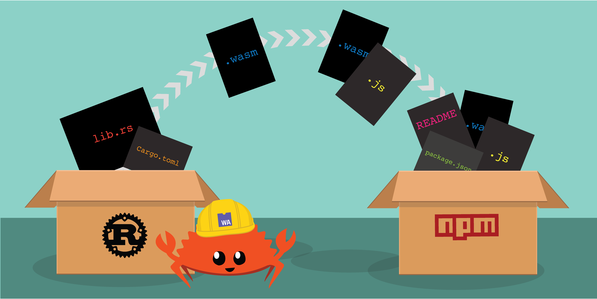

ParisJS meetup - june 2019
Try WebAssembly Now
Goal of this talk
- Use WebAssembly to do other things than
add - Experience WebAssembly through our usual web developer tooling
Rust
- Low level
- No garbage collector
- No runtime → Lighter
.wasmfiles
Rust and WebAssembly

tools
- wasm-bindgen
- wasm-pack
wasm-bindgen
Facilitates high-level interactions between wasm modules and JavaScript.
wasm-bindgen
Import JavaScript things into Rust and export Rust things to JavaScript.
use wasm_bindgen::prelude::*;
// Import the `window.alert` function from the Web.
#[wasm_bindgen]
extern "C" {
fn alert(s: &str);
}
// Export a `greet` function from Rust to JavaScript, that alerts a
// hello message.
#[wasm_bindgen]
pub fn greet(name: &str) {
alert(&format!("Hello, {}!", name));
}
wasm-bindgen
Use exported Rust things from JavaScript with ECMAScript modules!
import { greet } from "./hello_world";
greet("World!");
wasm-pack
Helps you build rust-generated WebAssembly packages that
- you could publish to the npm registry
- use with other packages in workflows like webpack
wasm-pack

BASIC DEMO 📺
cargo install wasm-pack
wasm-pack build --target web
@wasm-tool/wasm-pack-plugin
@wasm-tool/wasm-pack-plugin
const path = require('path');
const HtmlWebpackPlugin = require('html-webpack-plugin');
const WasmPackPlugin = require("@wasm-tool/wasm-pack-plugin");
module.exports = {
entry: './index.js',
output: {
path: path.resolve(__dirname, 'dist'),
filename: 'index.js',
},
plugins: [
new HtmlWebpackPlugin(),
new WasmPackPlugin({
crateDirectory: path.resolve(__dirname, ".")
})
],
mode: 'development'
};@wasm-tool/wasm-pack-plugin
Under the hood
wasm-pack build --target bundler